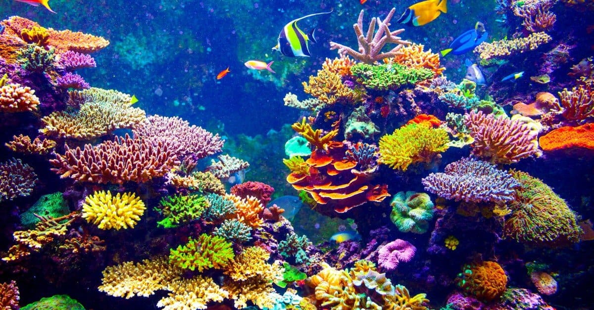

I am from Massachusetts and live in Rochester, MA. I am an MSCS Align student. I am interested in this course because I want to design and build app’s and websites. I hope to start my own business helping small businesses increase their online exposure with user-friendly apps, custom designed to their business needs and skill level. I currently work as an EMT with Brewster Ambulance and I am a mariner on a safety vessel for the offshore wind farms off the coast of New England. I am also the project coordinator for the Gloucester Fishermen’s Wives Development Program. I manage a grant from the MA Clean Energy Center that pays for mariners to take advanced safety training and upgrade their mariner licenses so they can get jobs working in offshore wind. I also love gardening.
I would like to build an app for mariners that serves many functions. It would primarily be a safety tool designed to help captains and crew ensure their vessels are ready for sea. It will provide checklists and logs about each boat they manage, including:
It would also have a community section that allows users to interact with others in the maritime industry. This is useful to help captains find crew for their trips, seek help in the case of offshore emergencies or to get advice from other mariners when up against new obstacles.
As a mariner I understand how unique every vessel is and know the importance of safety at sea. Managing a vessel and being responsible for the lives of its crew is of utmost importance. Having a tool that can help keep track of everything would ensure captains and crew are prepared and safe on every voyage. With many aging captains, a modern tool for the younger generation replacing them will be a great addition to the maritime industry.
